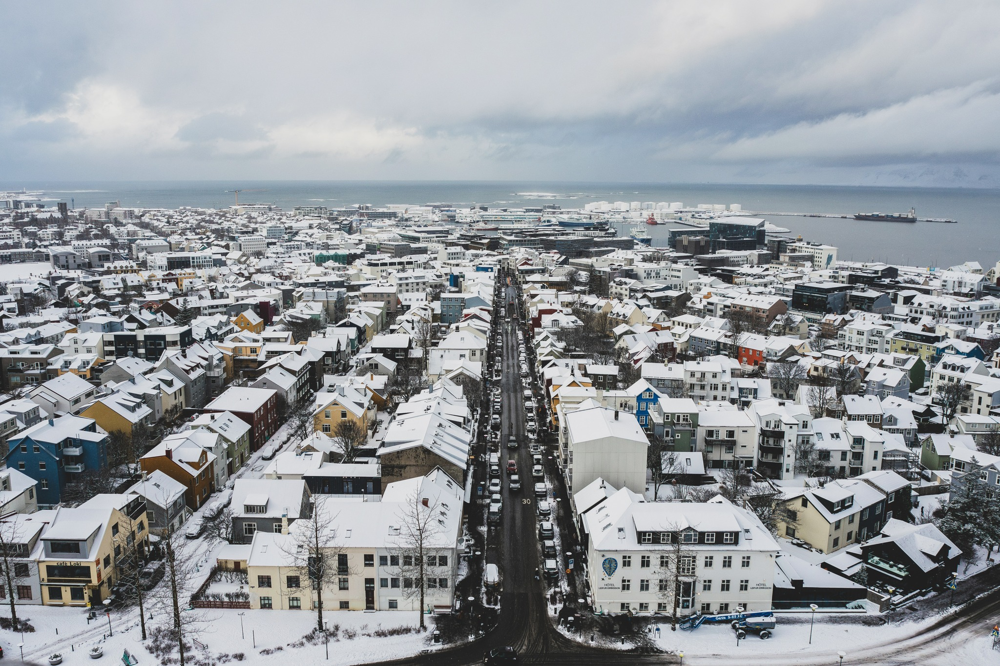
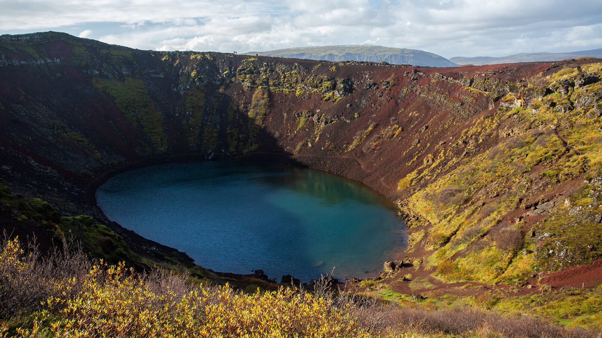
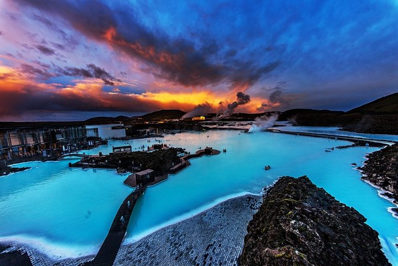
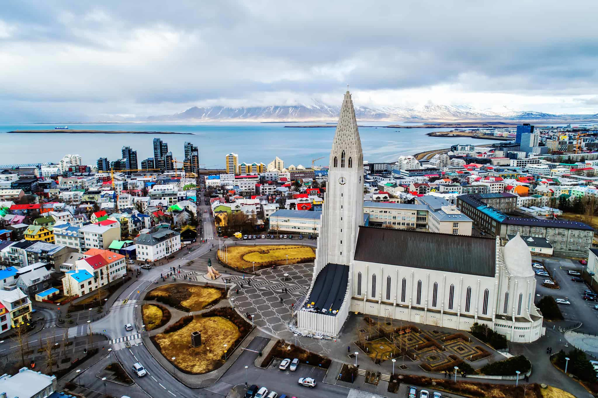

冰島
冰島是一個獨特的北歐島國，以其壯麗的自然景觀和豐富的文化遺產而聞名。這個位於北大西洋的島嶼國家擁有壯觀的冰川、火山、間歇泉和瀑布，吸引著世界各地的旅客前來探索。
以下是一些主要的旅遊景點以及它們的歷史和文化詳細介紹：
旅遊景點

黃金圈
歷史:
黃金圈是冰島最受歡迎的旅遊路線之一，主要包括三個著名景點：辛格維利爾國家公園、古佛斯瀑布和赫琉加爾間歇泉（Geysir）。這條路線展示了冰島的自然奇觀及其地質歷史。辛格維利爾國家公園於2004年被聯合國教科文組織列為世界遺產，意義非凡。
文化：
黃金圈不僅僅是自然景觀，更是冰島歷史和文化的象徵。辛格維利爾是冰島議會創立的地點，被認為是冰島政治的搖籃，這裡的歷史意義對冰島人來說十分重要。
景點：
1. 辛格維利爾國家公園 ：
這是一個地質和歷史意義重大的地區，可以看到北美和歐亞兩個板塊的裂縫。
2. 古佛斯瀑布 ：
壯觀的雙層瀑布，當水流跌落時，噴起的水霧在陽光下形成彩虹，美不勝收。
3. 赫琉加爾間歇泉 ：
著名的間歇泉，間歇噴發溫泉的劇烈場景吸引了眾多遊客。

藍潟湖
歷史:
藍潟湖位於冰島西南部，成立於1976年，最初是一個地熱能的副產品，隨後因其治療特性而受到關注。藍潟湖的水質富含礦物質，具有良好的保健效果，逐漸發展成為知名的療養度假村。
文化：
藍潟湖不僅是冰島著名的旅遊地點，也是當地人日常生活的一部分。這裡的地熱能資源在冰島的可持續發展中起到了重要作用，並展示了冰島人對自然資源的利用和尊重。
景點：
1. 礦物質療愈的溫泉 ：
藍潟湖的水富含矽藻泥和硅，對皮膚有良好的保健效果，吸引了眾多遊客來此享受放鬆的沐浴。
2. spa 體驗 ：
度假村提供各種水療服務和各類護理，讓遊客在自然環境中恢復身心。
3. 餐廳 ：
湖邊的餐廳提供以當地食材為主的美食，遊客在享受美景的同時，也能品味美味佳餚。

雷克雅未克
歷史:
雷克雅未克是冰島的首都，也是全國最大的城市，成立於18世紀。這座城市以其獨特的建築風格和活力四射的藝術氛圍而聞名，成為冰島的文化和政治中心。
文化：
雷克雅未克擁有豐富的藝術和文學傳統，以音樂、文學和美術活動而聞名。每年舉行的音樂節和文學獎使這座城市成為文化愛好者的聚集地。
景點：
1. 哈爾格林姆斯教堂 ：
這座壯觀的教堂是雷克雅未克的地標，外觀設計靈感來自於冰島的自然風光，教堂的鐘樓提供壯麗的城市全景。
2. 國家博物館 ：
這裡展示了有關冰島歷史和文化的豐富收藏，遊客可以深入了解冰島的歷史與藝術。
3. 太陽航行者 ：
這是一座象徵性的雕塑，位於海濱，代表著探索和未來的希望，提供了壯觀的海景和城市背景。